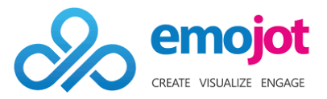

Software Engineer, HighFlyer Global (Pvt) Ltd
May 2023 - Present
HighFlyer is a firm that offers a comprehensive range of services to help organizations
meet their strategic goals.
- Technologies used - React
- Developed an analytics portal using React.js and Recharts which users can select
filters
and view the analytics in various chart types, such as line charts, bar charts, pie
charts, and more.
- Implemented additional functionalities like drag and drop, full screen view,
clipboard copying to customize the dashboard.
- Implemented pdf generation from the dashboard data using react-pdf library
- This allowed me to strengthen my skills in frontend development, data visualization,
and user interface design.
Software Engineer, WSO2 Inc.
May 2022 - Jan 2023 (8 months)
WSO2 is an open source technology provider in the API Management domain.
- Technologies used - Java, Maven
- Worked on the version migration of the Twilio SDK from 3.3.13 to 8.36.0 in Twilio
ESB Connector. This was an urgent customer end request which I completed within
minimum time.
- Contributed to the integration test management, APIM support and APIM regression
test handling and improvement
- Bug fixing & API Manager improvements

Software Engineer (Intern), Emojot (Pvt) Ltd
October 2020 - May 2021 (8 months)
Emojot is a global pioneer in real-time, emotion-based, intelligent experience
management.
- Technologies used - JavaScript, Node.js, MongoDB, Postman
- Have implemented a Multi-Factor authentication system for Emojot Dashboard and
Customer Experience Management Portal.
- Have improved user operation management and restricted user actions based on
authorization levels
- Bug fixing